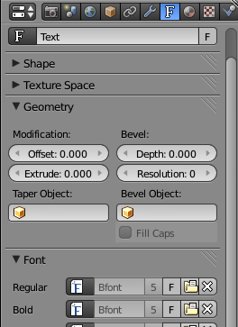
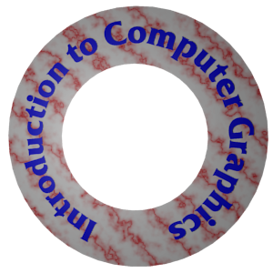
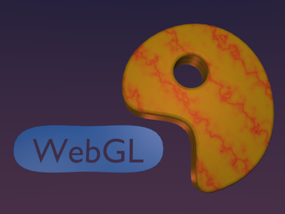
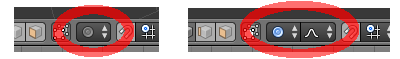
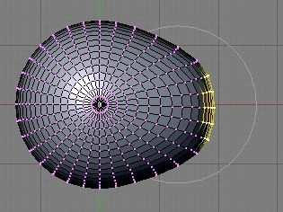
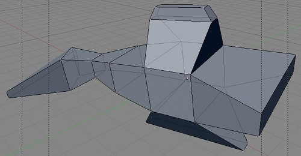
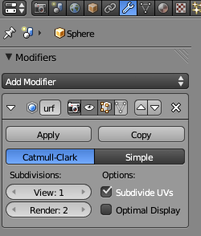
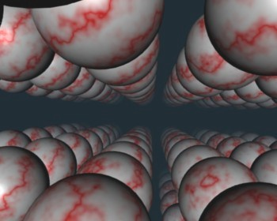
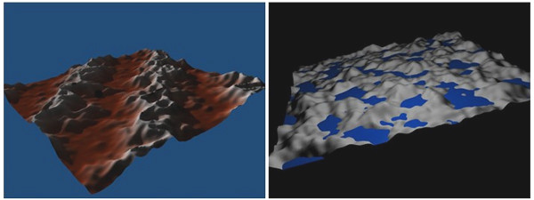
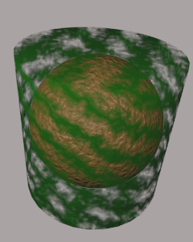

Blender has a wide variety of basic shapes and tools for making more complex objects. This section will discuss just some of the possibilities for modeling 3D shapes.
Blender can work with text, which it can render as either a flat 2D shape or as a 3D shape with added thickness.
To add a text object to your scene, use the "Text" command in the "Add" menu. When you put a text object into Edit Mode, by pressing the TAB key while it is selected, you can use the keyboard to edit the text that it contains; you will certainly want to do this, since the initial text is just the word "Text".
When a text object is selected, the button for selecting the Object Data controls in the Properties Editor frame shows an "F". Clicking the "F" reveals various useful controls, some of which are shown in this picture:

For example, there are buttons to control whether multi-line text is Right, Left, or Center justified, and there are numeric buttons to control character, word, and line spacing. You can also select the font to be used for the text. Blender has only one pretty basic built-in font, but you can select a font file from the file system to be used instead. Blender can work with Postscript Type 1, True Type, and Open Type fonts. To select a font file, click a small "folder" icon in the "Font" section of the text buttons. It is probably only necessary to set a "Regular" font. (By the way, you can download lots of free fonts from Google Fonts at www.google.com/fonts.)
An interesting feature is that you can lay your text out along the shape of a curve. You need a curve object, which you can create as described in the next subsection. You need to know the name of the curve object; you might want to change the name to something meaningful. Select the text object. Go to the Object Data controls for the text, shown above. Find the box labeled "Text on Curve" (just below the font selection), click the icon on the left end of the box, and select the curve from the popup menu of curves. The baseline of the text will curve to match the shape of the curve. You will likely have to scale the text—or the curve—to get it to fit nicely. Note that the text does not jump onto the curve; it just uses the curve object's shape, wherever the curve is located. The curve will not be visible in a rendered image. You can move the curve onto a hidden layer, if you don't want to see it in the 3D View. If you change the shape of the curve or scale it, the text will follow the new shape. For this sample image, I used a Bezier circle as the curve, and used another circle with its center removed as background for the text:

Once you have your text, you can extrude and bevel it, exactly as described in the next subsection for curves, to get a nice 3D appearance.
Blender has two types of curves: Bezier curves and NURBS curves. (There are also "paths", which are just a kind of NURBS curve.) To add a curve to your scene use the "Add" / "Curve" sub-menu. A Bezier curve has "control points" with "handles" that can be adjusted to change the shape of the curve. NURBS curves are similar, but the curve is determined entirely by control points and isn't constrained to pass through any particular points. NURBS curves are known for making nice smooth shapes. (There are also NURBS surfaces.)
By default, a curve is "3D," that is it doesn't have to lie in a plane. Usually, you want "2D" curves that are constrained to lie on a plane. To make a curve 2D, go to the "Object Data" controls in the Properties Editor frame. When a curve is selected, the button for "Object Data" looks like a curve connecting two points. Click the "2D" button. You'll notice that the interior of a closed 2D curve is filled in in the 3D view, and it will be filled when the scene is rendered.
When you put a curve into Edit Mode, you will see its control points. For a NURBS curve, they lie alongside the curve. For a Bezier curve, the control points are at the ends of "handles" that are attached to points on the curve. You can select control points and drag them (using the G key) or otherwise transform them. For a Bezier curve, you can also select the points on the curve and drag them. By default, the two ends of a handle line up, making a straight line; if you move one end, the other end also smoves. (There are actually four types of handles: Auto, Vector, Aligned, and Free. Select one or more vertices in Edit Mode, and hit V to change the type. In particular, Vector allows you to make sharp corners on a curve.)
More important, you can extend a non-closed curve by adding new points. You should start with a basic Bezier or NURBS curve, rather than a circle. If you want the curve to be 2D, set it to 2D before adding points. Put the curve into Edit Mode; the curve must be in Edit Mode to add new points. Select one endpoint of the curve, by right-clicking near it. To add a point, control click with the left mouse button at the location where you want the new point to be located. The new point that you add will be connected to the selected endpoint, and the selection will move to the point that you just added. This makes it easy to add several points in sequence by control-left-clicking several times. For a Bezier curve, it's a good idea to hit V and make sure that the type of vertex is Automatic before adding new points.
If the curve is not already closed and you want to close it (that is, connect the end back to the beginning), just hit "ALT-C" while the curve is in Edit Mode. Hitting "ALT-C" key again will re-open the curve.
A curve can actually consist of several disconnected segments. If you left-control-click while editing a curve without selecting an endpoint, then you will start drawing a new, disconnected segment of the curve. You can also can use the Add menu to add a new disconnected segment to a curve that you are editing in Edit Mode; if you add another curve while a curve is in Edit Mode, you add a new segment to the existing curve rather than a separate curve. For example, if you add a Bezier circle to the scene, put it into Edit Mode, and then add another Bezier circle inside the first, you will get a ring—a disk with a hole removed.
A closed 2D curve bounds a region, which will be shown as a flat surface when you render the scene. When a curve self-intersects or has several disconnected segments, it's not completely clear what it means to be inside the curve. The rule is based on "winding number" at a point, which means the number of times that the curve encircles the point. If the curve circles the point an odd number of times, then the point is inside the curve; if the curve encircles it an even number of times, then the point is outside.
You can extend the 2D region inside a closed 2D curve into the third dimension by extruding the curve. Look in the curve's "Object Data" controls for a numerical input labeled "Extrude" (under "Geometry"). Increasing the value in this box extends the curve into a 3D object, perpendicularly to the plane in which it lies. Next to the "Extrude" box are a "Bevel Depth" box and a "Bevel Resolution" box. Increase the value in the "Bevel Depth" box to cut an edge off the 3D shape of the extruded curve. Increase the "Bevel Resolution" to round the edge rather than cut it off level. For the object on the right in the following picture, I put a Bezier circle inside another closed Bezier curve (while in Edit Mode!) and set Extrude, Bevel Depth, and Bevel Resolution to be positive values:

It's possible to transform a Text object into a curve. Just select the text object, hit ALT-C, and select "Curve from Mesh/Text". However, you can't convert the curves back to text. Once you've converted the text into a curve, you can edit the character outlines as curves. Furthermore, you can add other curve segments to the text curve. For the left object in the above picture, I created the text, converted it to a curve, put it into Edit Mode, added a Bezier circle, and manipulated the vertices of the circle so that the circle surrounded the text. The inside of the text was effectively subtracted from the interior of the circle.
The rest of this section deals mostly with mesh modeling, and even then it only covers a small portion of all the options that are available.
By default, when you transform selected vertices (or edges or faces) of a mesh object in Edit Mode, only the selected items are affected. This can lead to ugly, spikey objects! But if you turn on Proportional Editing, then a vertex exerts a kind of force on neighboring vertices, so that for example if you drag a vertex, nearby vertices are pulled along with it. There is a small button in the header panel below the 3D view that turns on proportional editing in Edit Mode:

The picture on the left shows the button when it is disabled; click it and select "Enabled" to turn on proportional editing. A second button appears next to the first, as shown on the right, which lets you select what kind of influence the transformed vertices will have on other vertices.
When proportional editing is turned on and you are transforming some vertices, a circle appears in the 3D window to show the "radius of influence", that is, the distance over which the force exerted by a vertex extends. You can change the size of the radius of influence using the scroll wheel on the mouse or the "PageUp" and "PageDown" keys. In the following image, a sphere is in Edit Mode and a group of vertices is being dragged. The faint white circle shows the radius of influence, and you can see that vertices within that radius have shifted somewhat in the same direction as the dragged vertices. The shape that results from this edit will be much nicer than if only the selected vertices were moved.

(Try selecting the vertices along equator of a UV Sphere and scaling the selection up, with proportional editing enabled. You can make something like a flying saucer shape!)
Extrusion is a powerful method for adding geometry to a mesh. Extrusion duplicates one or more geometry elements (vertices, edges, or faces), with the duplicate attached to the original mesh with more new edges or faces. The easiest way to do this is with "quick extrude" (although it doesn't offer the most control). To use it, put the mesh object into Edit Mode and select the geometry elements that you want to duplicate. Mostly commonly, that will mean one of the faces of a mesh, although you can also do multiple faces or single edges. Selecting a face means selecting all the vertices of that face. Then all you have to do is control-left-click at some point, and the selected face will be duplicated at that point. (Note that this is the same way that you would extend a curve.) The original face is now de-selected, and the new duplicate face is selected instead, making it easy to move, scale, or rotate the new face and to add more faces at other locations.
For more control, select the geometry that you want to duplicate and press the "e" key. When you extrude using the "e" key, the duplicated geometry is in the same location as the original and will not be visible, but it is selected and in grab mode so that you can easily move it away from that location simply by moving the mouse or pressing arrow keys. Remember that you can constrain the possible translations by holding down the control keys while dragging. And remember to left-click or press Return to exit from grab mode!
As an example, I started with a mesh cube and extruded various faces, scaling each extruded face along the way. Here is what it looked like in the Blender 3D window in Edit Mode:

Modifiers are a powerful feature that can affect the rendered view of a mesh object, without actually modifying the underlying geometry. To apply a modifier to an object, first select the object. Then go to the "Object Modifiers" controls in the Properties Editor frame. The button for selecting the Object Modifiers controls looks like a monkey wrench. Click the "Add Modifier" button to choose from a large selection of modifiers to be added to the object. I will mention only a few of them. In fact, I only understand a few of them myself. Here is a picture of the modifier controls after adding a modifier:

You can add several modifiers to a mesh object. They will be applied one after the other to the mesh. Each modifier will take the result of the previous modifier as its starting point.
When you click Add Modifier, you get a popup menu containing the available modifiers. Near the bottom of the popup menu, under the heading "Generate", you will see the "Subdivision Surface" modifier. This modifier is useful for modeling shapes, particularly when used with extrusion. It makes a smoother shape that uses the original shape as an outline, sort of like the control points of a NURBS curve. Try adding a "Subdivision Surface" modifier to a cube that you have extruded a few times. When you do that, a small panel will appear under the "Add Modifier" button with controls for the modifier, as shown above. The "View" and "Render" buttons, under "Subdivisions," are important controls for sub-surfaces. Increasing the level increases the number of polygons on the sub-surface, and hence its smoothness. The "Render" control selects the number of levels that will be used when an image of object is rendered. The "View" control selects how many levels you see in the 3D window, which you might want to make smaller than the render level to speed up drawing of the window. (Remember that if you want a really smooth appearance for a mesh, you should set it to use "Smooth Shading" instead of "Flat Shading.")
The "X" icon on the right of the modifier controls can be used to delete the modifier from the object. You should also note the "Apply" button. If you click this button, the original mesh object will be discarded and replaced with the modified version of the surface. This makes the modification permanent. The modifier will disappear from the modifier control panel. You might do this if you want to start editing the sub-surface itself—but you won't be able to get the original back (except with Undo).
Another modifier, the "Array" modifier, can make duplicates of an object and arrange them in a line. Just add the modifier to an object, adjust the distance between objects in the X, Y, and Z directions, and use the "Count" control to specify how many objects you want. (There are more advanced ways of arranging the duplicates, but I won't cover them here.)
In the picture shown below, I started with a single sphere and applied three Array modifiers to it. (You can add multiple operators to an object, and they will be applied in sequence.) The first modifier turned the sphere into a line of spheres in the X direction. The second modifier duplicated the line in the Y direction to give a grid of spheres. The third duplicated the grid in the Z direction to give a 3D formation of spheres. In the image, I placed the camera in the grid, looking along a line of spheres, with a Sun Lamp shining in the same direction that the camera is looking. I added some Mist (in the World controls) to make the spheres fade a bit in the distance. (I had to set a fairly large "Dist" value for the mist, or else I didn't see anything at all.)

As an example of something different that you can do with a texture, we look at displacement mapping, where the vertices of a mesh are moved, or displaced, by an amount that depends on a texture. You can do displacement mapping with a "Displace" modifier.
Displacement mapping can work well for an Ico Sphere, where it can add a rough, planet-like surface. For terrain, you can apply a Displace modifier to a mesh "Grid" object. A Grid is just a subdivided rectangle. To get nice terrain, you need a lot of vertices, so change the "X Res" and "Y Res" of the grid to 100 or higher when you create it. (The setting is in the "Tools" panel just after you add the grid to the scene.) Similarly, if you want to apply a Displace modifier to an Ico Sphere, you should increase the number of Subdivisions when you add it.
To use a texture as a displacement map, you should first add a Material to the object, then add a texture. A procedural texture like Marble or Clouds can work well for this. A grayscale image could also work. (In fact, there are images that are meant precisely for creating terrain using this technique.) You might want to change the name of the texture, so you can identify it easily.
Then, go to the "Modifier" controls and add a "Displace" modifier, which you will find in the "Deform" section of the popup menu. To set the texture to be used, click the texture icon under "Texture" in the modifier controls to get a list of existing textures. From the list, select the texture that you added to the object.
You should see the effect immediately, though you might have to rotate the view to see it clearly. You might want to decrease the "Strength" of the modifier to make the displacement effect less extreme. Also you will probably want to hit the "Smooth" button in the "Tools" panel to get a smooth-looking surface.
If you are using a texture for a displacement map, you probably don't want it to affect the color of the object. Go to the texture controls and look under "Influence". You will see that the texture is set to influence the diffuse "Color" of the material. Uncheck that box to turn off the effect on color (although leaving it on can have a nice effect too.)
Here are two examples of Displace modifiers applied to Grids to produce terrain. I used a Marble texture for the image on the left, and a Clouds texture on the right:

In both cases, I turned down the specular intensity of the material to zero to avoid having glossy ground. On the right, I added a separate, smooth blue plane that lies above the terrain in some places and below it in others. On the left, I let the texture influence the color as well as the Displace modifier. This is a nice effect, since it makes the color correlate with the height. (When using the color, remember to set the coordinate mapping of the texture to "Generated" in the texture controls.)
There are many fun features of lights, materials, and textures that weren't mentioned in the previous section. I'll talk about a few here. Some of them use Blender's built-in basic "ray-tracing" abilities that can create effects that are difficult to achieve with standard OpenGL rendering. Ray-tracing is an advanced rendering technique that handles shadows, reflections, and transparency very well.
Lamp properties can be set in the Lamp "Object Data" controls in the Properties Editor panel. (The Lamp icon, which looks like a tiny point light with four arrows radiating out from it, appears when a lamp is the selected object.) You can change the basic type of the Lamp (Point, Sun, or Spot). There is a control for setting the color of the light and an Energy input that sets its general level of brightness. There is a "Ray Shadow" button that you can click to turn on ray-tracing-based shadows. Shadows are off for a newly created Point lamp or Sun, which means that that particular light will not cast shadows. (However, the light in the default Blender start-up configuration has shadows turned on.) For spotlights, an older type of shadow algorithm, "Buf. Shadow", is also available and is the default. Before ray-tracing was added to Blender, this was the only type of shadows that were implemented, and only spotlights could cast shadows. Note that if a light is not set to cast shadows, then it will shine right through objects, and this is a desirable effect in many cases.
Lighting a scene properly can be difficult. One approach uses a light near and a little above the camera, one or two dimmer lights off to the side and below the camera, and one more light illuminating the scene from behind. You should avoid using a large number of lights. Scenes can be lit more effectively and attractively with just a few.
You can make objects translucent. To do that, you have to turn on "Transparency" in the Material controls for the object. Furthermore, you have to reduce the Alpha value in the transparency controls. (There is a separate control for "Specular" under transparency because you might want a transparent object that still has strong specular reflection, as with glass.) The default transparency calculations use something called Z-Transparency. Change this to "Raytrace" to get ray-tracing based transparency. (With ray-traced transparency, you can also get "refraction" through a transparent object. For this, set the IOR slider in the transparency controls to a value greater than 1—probably only a little greater. IOR stands for "index of refraction.")
One of the nicest things about ray-tracing is its support for reflection of one object in another, which is very hard to do without ray-tracing. To make an object reflective in this sense, you have to turn on "Mirror", which you will find beneath Transparency in the Material controls. You also need to set the value of the "Reflection" slider in the Mirror section to be greater than 0 to make the surface reflective.
When working with textures, you should take note of the "Mapping" and "Influence" controls, which are part of the texture controls.
The "Mapping" section controls where the object's texture coordinates come from. Texture coordinates determine how the texture will be mapped onto the surface. The default setting for "Coordinates" is "UV," which will not usually not work well without additional setup. It should be changed to "Generated". The "Cube", "Tube", and "Sphere" buttons in the same section can produce better generated coordinates for some shapes. You can also adjust the mapping by setting values under "Size" and "Offset." This is called a texture transformation. Note that increasing the size will shrink the texture on the surface.
The "Influence" section of the Material controls tells what is done with the texture. We have only talked about applying textures to the diffuse color of a material, which is the default. The "Color" checkbox under Diffuse turns this behavior on and off. But the other buttons enable other ways of using the texture data. Generally, they make sense mostly with a grayscale texture like the procedural Marble and Clouds textures. Here are the options that I sometimes find useful: "Normal", under Geometry, makes the texture affect normal vectors; this can give a bumpy appearance to the surface, an effect known as a "bump map." (Note that the number input next to the checkbox controls the intensity of the effect). "Alpha", under Diffuse, allows the texture to make parts of the surface more or less transparent. But in order to get this to work, you have to change the "Blend" selection below the buttons from "Mix" to "Multiply", and you have to enable Transparency in the Material settings. "Emit" affects emissive color, which can makes the surface look like it's giving off light. There is also a useful "Negative" checkbox that will invert the effect of the texture. This picture shows a sphere with a bump map inside a cylinder that has a texture affecting its degree of transparency:
